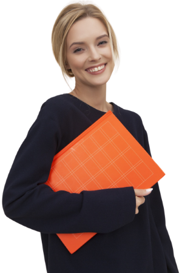

Despre mine
Servicii
Proiectele mele
Contact
Despre mine

Abilități
Tehnici de texturare care conferă profunzime și personalitate fiecărui personaj.
Creare de structuri complexe care permit mișcări naturale.
Modelare detaliată de la concepte stilizate până la designuri ultra-realiste
Software Utilizat: Blender, ZBrush, Substance Painter, Maya.
Certificări
Adobe Certified Professional
Maya International Designer
Blender Advanced User
Cum arată proiectele mele?